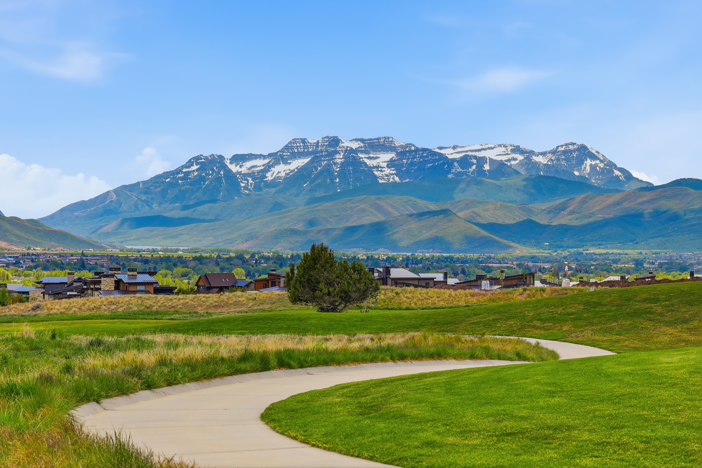

One State,
Many Worlds
The Wasatch Mountains split Utah into two different real estate markets. East of the range — the Wasatch Back — means resort towns, open valleys, and a quieter pace. West of the range — the Wasatch Front — is Utah's urban spine, running from Ogden through Salt Lake to Provo.
Then there's everything else. Moab. Bear Lake. St. George. Utah has more variety than most buyers realize, and Hugh has worked all of it.
This page isn't meant to replace a conversation. It's meant to orient you before you have one.
Two Sides of
the Mountains
Not sure where to look? Ask Hugh →
Greater Park City

The Town
Mountain living with real culturePark City started as a silver mining camp and became one of the most recognized ski towns in the world. Main Street still feels like a real place — restaurants, galleries, a working arts scene — not a resort village built from scratch. The Sundance Film Festival brings a different crowd every January. The rest of the year belongs to the people who actually live here.
The Market
Global demand, tight inventoryPark City draws buyers from across the country and internationally. Two world-class resorts — Park City Mountain and Deer Valley — anchor demand that doesn't move much with economic cycles. Entry-level condos start around $600K. A ski-in/ski-out estate can reach $15M or more. If something comes up that you like, you won't have long to think about it.
Neighborhoods
Something for every buyerOld Town for walkability and character. Deer Valley and Empire Pass for ski-in/ski-out luxury. Promontory for gated ranch living with a golf course. Canyons Village for slope-side convenience. Park Meadows and Pinebrook for families who want a neighborhood feel without the resort price tag. Hugh knows every pocket.
Heber & Midway


The Valley
Space that Park City can't offerHeber Valley sits at 5,600 feet behind the Wasatch Range — a wide, open basin with working farms, custom-built estates, and a pace of life that's genuinely different from the resort corridor. Midway, settled by Swiss immigrants in the 1800s, has held onto its character in a way that's rare. Hot pots, a Bavarian feel on the town square, and neighbors who know each other by name.
The Value
More land per dollarHeber and Midway consistently offer more for your money than anywhere else on the Wasatch Back. You're still close to Deer Valley and Jordanelle Reservoir — but the price per square foot drops considerably the moment you cross the hill. Families who want acreage, equestrian properties, or a custom build find the best options here.
Recreation
Four seasons, no crowdsJordanelle Reservoir for boating and paddleboarding. Deer Creek for fishing. Soldier Hollow for cross-country skiing and summer trail running. The Heber Creeper historic railway runs through the canyon year-round. And Deer Valley is a 20-minute drive over the hill for those who want the ski access without the ski-town prices.
Kamas & Oakley

What Draws People Here
The last affordable Summit County addressKamas and Oakley sit at the eastern edge of Summit County, where the valley opens toward the Uinta Mountains and the pace slows considerably. Communities built on agriculture and outdoor access — not resort infrastructure. Larger lots, lower price points, and a genuinely rural feel that's 20 minutes from Park City but a world away in character.
Who It's For
Summit County without the sticker shockBuyers who love the proximity to Park City but want land, privacy, and a community that isn't defined by tourism. Equestrian properties are common. Multi-acre parcels with outbuildings and irrigation rights still come available. If you're building a custom home in Summit County without a resort budget, this is where Hugh looks first.
Salt Lake Valley

The Hub
Everything Utah offers, within reachSalt Lake is where Utah's connectivity lives. The airport runs direct flights to most major US cities and several international destinations. Seven world-class ski resorts — Alta, Snowbird, Brighton, Solitude, and the Park City resorts — are all within 45 minutes. Neighborhoods range from walkable urban to spacious suburban to canyon-adjacent. Hugh knows all of them.
Neighborhoods
More variety than most people expectThe Avenues above downtown for Victorian character and walkability. Sugarhouse for bungalows close to the city. Holladay and Millcreek for larger lots and canyon proximity. Draper and South Jordan for newer construction and good schools. East Bench for views against the mountain. Each area has a distinct personality — the right one depends entirely on how you want to live.
Utah County
Growth Country
The fastest-moving market Hugh watchesUtah County has grown faster than almost anywhere in the country over the past decade. BYU and UVU anchor the north end. Silicon Slopes — the tech corridor running from Lehi through Orem — has brought serious corporate investment and a younger professional demographic. New developments expanding south into Spanish Fork, Payson, and Springville. Hugh's take: buy before the growth catches up to the price.
Community
Deep roots, strong schoolsUtah County has a distinct culture built around community, family, and faith. School ratings here are consistently strong. Neighborhoods tend to be well-maintained and neighbor-involved in a way that's harder to find in larger metros. For buyers who prioritize community alongside real estate fundamentals, Utah County consistently delivers at price points that still make sense.
Davis County
The Quiet Achiever
Consistently undervalued, consistently goodDavis County runs along the eastern shore of the Great Salt Lake between Salt Lake City and Ogden. Bountiful, Centerville, Farmington, Kaysville — established communities with mature landscaping, strong schools, and a suburban quality of life that's hard to fault. The commute to SLC is around 20 minutes by car or FrontRunner. Hugh has watched buyers overlook Davis for years and quietly benefit from it.
Farmington Station
A commuter hub that became a destinationFarmington Station Park — built around the FrontRunner rail stop — has transformed a quiet suburb into a walkable mixed-use area with retail, restaurants, and entertainment. It's drawn new development and younger buyers who want suburban square footage with urban-adjacent energy. The area has appreciated steadily and continues to attract buyers priced out of Salt Lake neighborhoods.
Beyond the
Corridor
About 80% of Hugh's business comes from the communities above. The other 20% is everything else Utah has to offer. If you have your eye on something outside the Wasatch, he can help.
Bear Lake
Turquoise water on the Idaho border. Cabins, vacation properties, and one of Utah's most distinctive lake communities.
Moab
Red rock country with Arches and Canyonlands at the door. A strong short-term rental market and serious outdoor access.
St. George
Utah's warm-weather anchor. Zion Canyon nearby. Retirees, snowbirds, and a growing technology and commercial presence.
Cache Valley
Logan and the Bear River Mountains. Utah State University town with genuine small-city character and underrated outdoor access.
Cedar City
Southern Utah University, Cedar Breaks National Monument, and a growing arts community between SLC and St. George.
Somewhere Else
If you've found a place in Utah that speaks to you, call Hugh. Thirty years of statewide relationships cover a lot of ground.

Skip the
Research Rabbit Hole
"Every buyer I work with has already spent weeks reading articles. What they actually need is someone who's driven every road and can tell them what a neighborhood is really like."
No form letter. No junior agent handoff. Hugh picks up the phone. Whether you're two years out or ready to move next month, the conversation costs nothing.
Talk to Hugh Directly